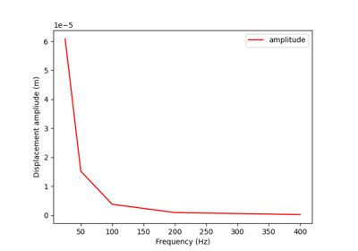
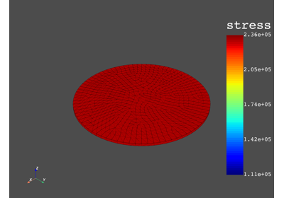
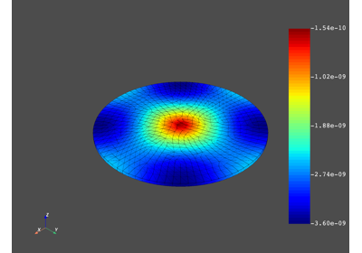
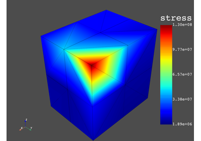
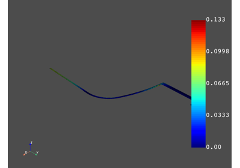
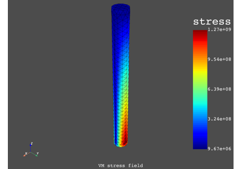

Advanced and miscellaneous examples#
These examples show advanced use cases to demonstrate the high level of workflow customization.

Multi-stage cyclic symmetry using advanced customization
Multi-stage cyclic symmetry using advanced customization

Solve harmonic problem (with damping) using matrix inverse
Solve harmonic problem (with damping) using matrix inverse

Average elemental stress on a given volume
Average elemental stress on a given volume

Exchange data between servers

Extrapolation method for stress result of a 3D element
Extrapolation method for stress result of a 3D element

Extrapolation method for strain result of a 2D element
Extrapolation method for strain result of a 2D element



Pressure vessel analysis according to an ASME standard
Pressure vessel analysis according to an ASME standard

Calculate the number of cycles to fatigue failure
Calculate the number of cycles to fatigue failure


Manage the DPF licensing logic using the server context
Manage the DPF licensing logic using the server context